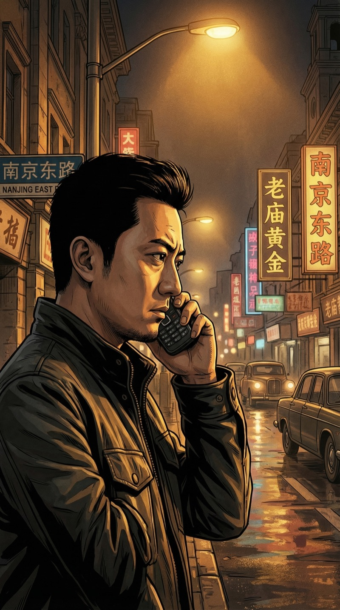
心跳加速。72小时前我还以为匿名邮件不会有人在意——显然我低估了2010年的互联网监管效率。
诺基亚贴在耳边，路灯把我的影子拉得很长。
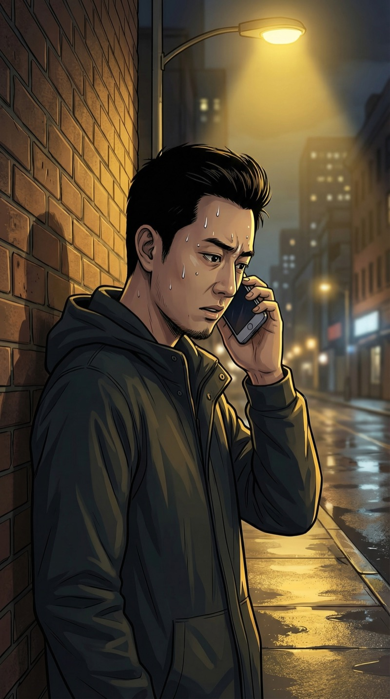
"别紧张，我不是警察。我姓李，中科院地质所的。你那封信的分析模型很专业——Landslide Susceptibility Index你用的是Wilson 2009年的改进版？那篇论文上个月才发表。你是搞地质的？"
……中科院？那篇论文是2024年我为了写AI+防灾方案临时翻的。Wilson 2009？我用的确实是2024年的改进版——2010年这个版本根本还没被引用过。冷汗下来了。
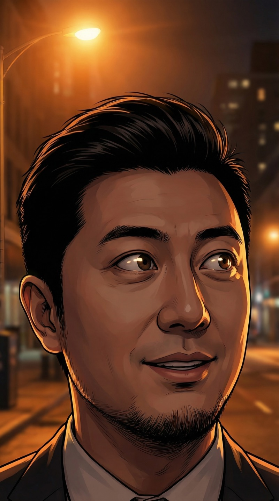
选项A：装傻说"我瞎写的"——不可信，分析太专业。
选项B：说"我是地质专业的"——查一下就穿帮。
选项C……
"李老师，实不相瞒，我是做计算机的。这个模型是我用编程方法做的数据分析——我把公开的地质数据、降雨数据、地形数据跑了一遍模拟。可能算法上有些巧合跟学术方法撞上了。"
2010年"大数据"概念刚起步，用"编程模拟"解释超前知识是最合理的掩护。
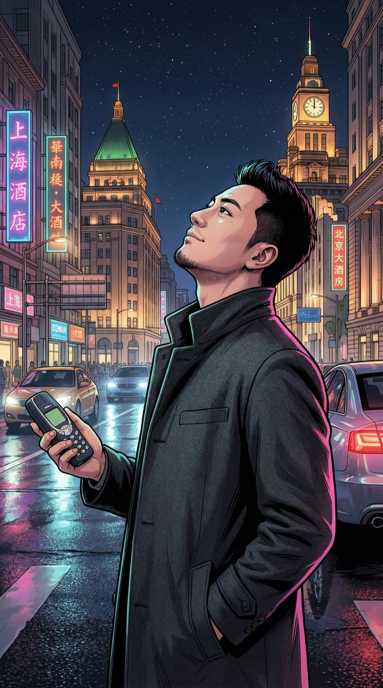
"做计算机的？有意思。你的预警结论我们初步验证了，地质条件确实存在风险。我已经向上面递了报告，建议加强监测。"
他……信了？而且上报了？如果因为这封信，哪怕多做一次地质监测、多一次疏散演练……也许……
"谢谢您认真对待，李老师。如果需要更多数据分析，我可以帮忙。"
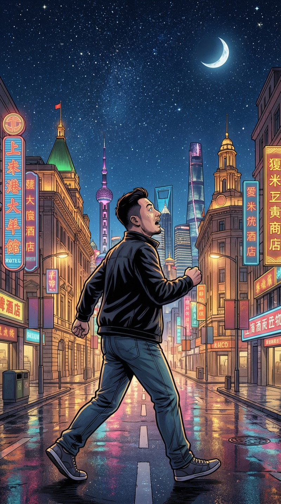
挂断电话后，脚步从沉重变轻快。头顶星空出奇清澈——2010年上海的光污染比2026年少得多。
李老师最后一句："对了小朱，我有个朋友在搞一个新项目，叫'知乎'。他在找技术合伙人，你有兴趣聊聊吗？"
知——乎？！知乎2011年1月上线，周源现在应该正在筹备期……这个李老师认识周源？！
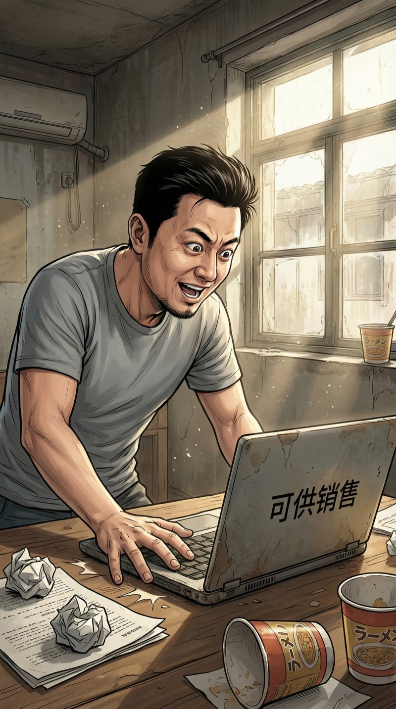
一周后。
阳光照进出租屋，我盯着屏幕——iTunes Connect显示"可供销售"。一拳砸在桌上。
2010年的App Store审核，七天。2026年我习惯了24小时审核——等这七天差点把我憋出内伤。
"上线了！现在就看市场反应了。"
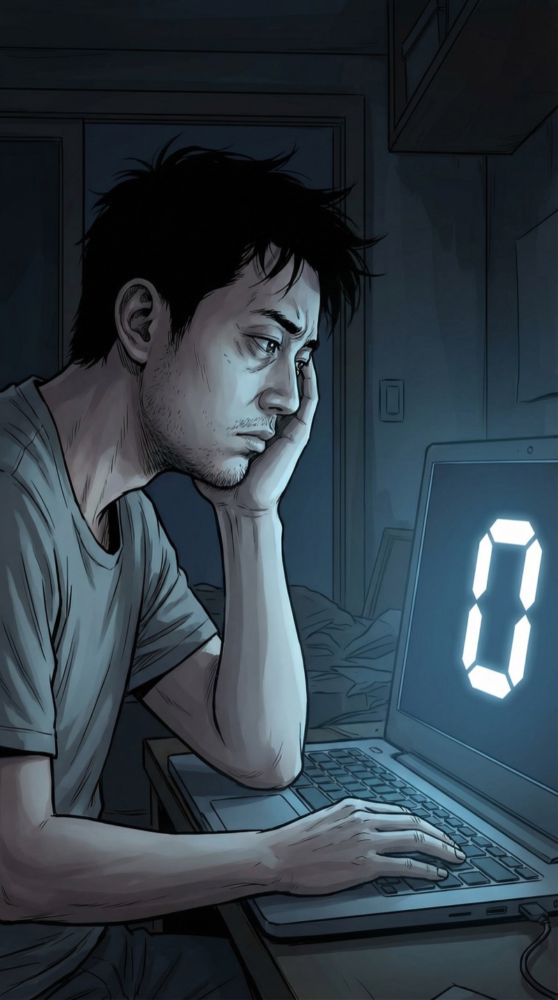
第一天。iTunes Connect后台。下载量：0。
零。一天零下载。我在2026年管过千万DAU的产品，现在连一个用户都没有。
重生者的降维打击……打了个寂寞。
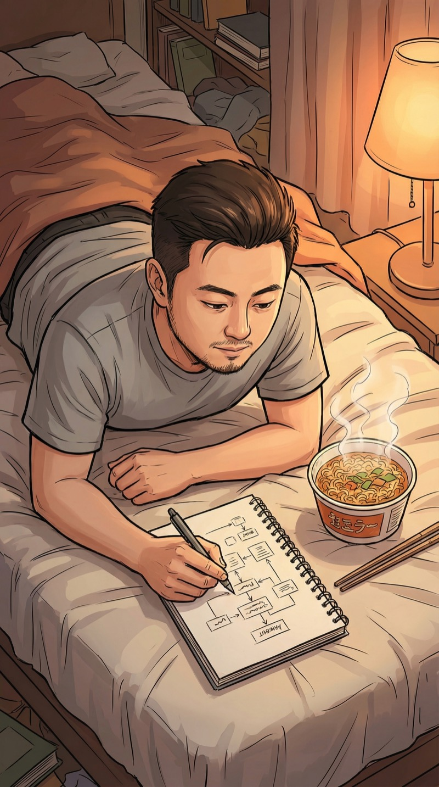
趴在床上，在笔记本上画用户获取漏斗。旁边一碗泡面散发着熟悉的味道。
2010年没有ASO优化工具、没有投放平台、没有KOL带货。用户获取=论坛发帖+口碑传播。我需要去……百度贴吧。
天哪我多少年没上过百度贴吧了。
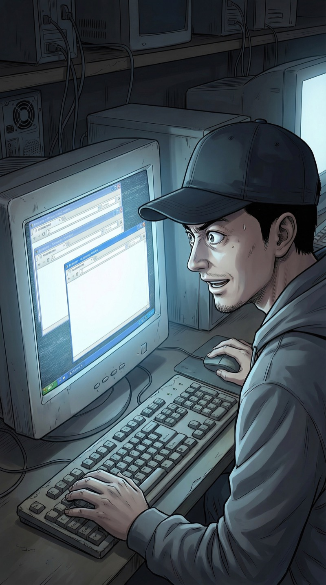
网吧。面前三个浏览器窗口：百度贴吧、天涯论坛、豆瓣小组。
选项A：在贴吧发广告帖——会被删。
选项B：做个"iPhone使用技巧"帖子——慢但有效。
选项C……等等，2010年还有一个渠道——威锋论坛！越狱iPhone用户聚集地！
"先写一篇'2010年iPhone必装的10个工具App'——我的排第三，不要太明显。"
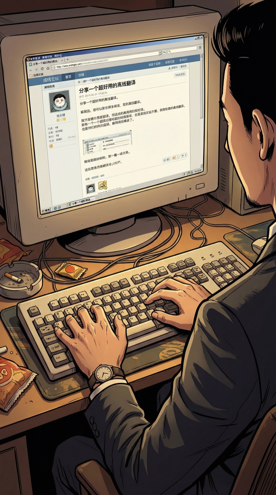
威锋论坛发帖页面。标题："分享一个超好用的离线翻译App，出国旅游再也不怕了"。
2026年做增长靠AI和自动化。2010年做增长靠手动发帖、P图、写软文。
返璞归真了属于是。
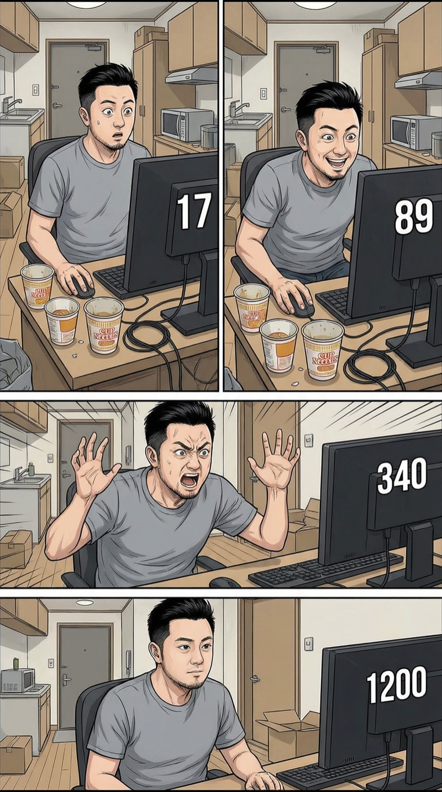
Day2：17 → Day3：89 → Day5：340 → Day7：1200
1200。一周1200个用户。在2026年这是个笑话——但在2010年的App Store，工具类排行榜我已经进了Top 100。
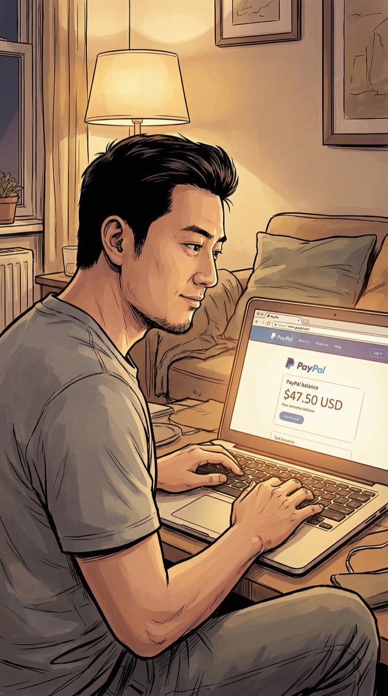
PayPal页面。余额：$247.50。
247美元。按2010年汇率，差不多1700块人民币。不够还房租。但这是——第一桶金的第一滴水。
"创业从来不是一步到位的。即使重生也一样。"
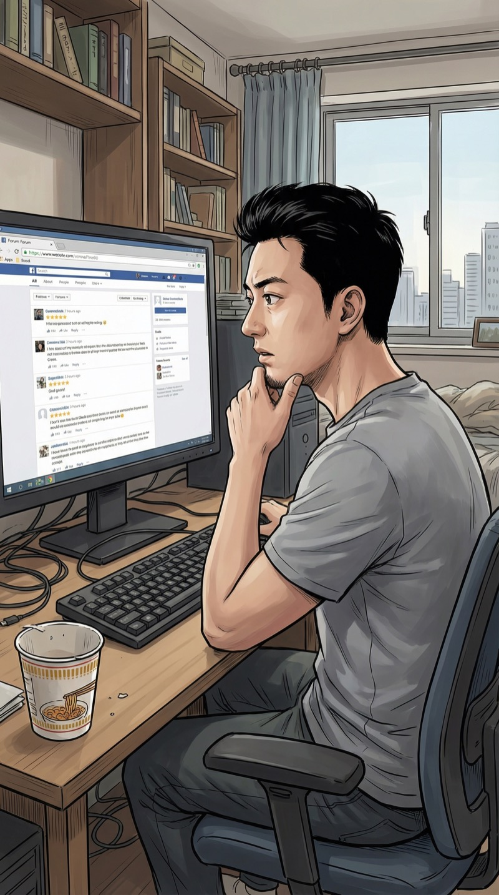
威锋论坛回帖区爆了："太好用了！""终于有离线翻译了！""求增加日语！""能不能做个Pro版？"
"求做Pro版"——2010年的用户比2026年的慷慨多了。好产品是稀缺资源。
"免费版做用户量，Pro版做收入。经典的Freemium——虽然这个词2010年还没流行。"
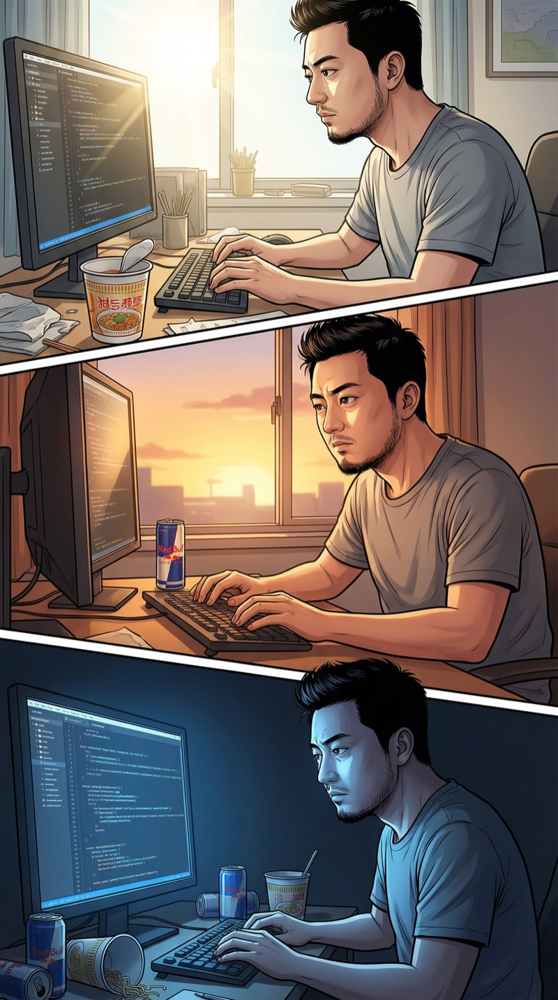
五天。白天码→晚上码→凌晨码。桌上堆满泡面盒和红牛。
Pro版完成。五种语言离线翻译+基础语音识别。在2026年这功能手机自带，但2010年——这是黑科技。
Excel图表（2010年没有Amplitude），下载曲线从平缓变陡峭。Pro版转化率：8%。
8%转化率。在2026年这个数字一般。在2010年——我打中了一个真实的痛点。出国的人越来越多，翻译工具是刚需。
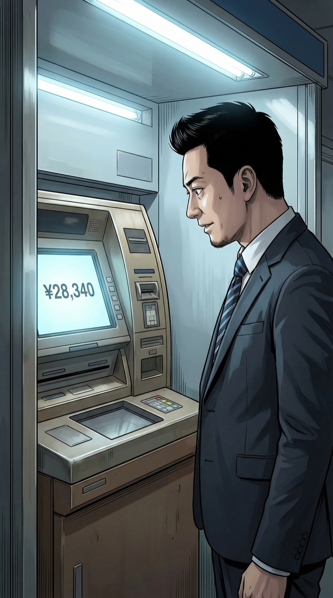
银行ATM。余额：¥28,340。
两万八。一个月。2010年上海白领月薪四五千。我一个人，一台电脑，一个月赚了半年工资。
"第一桶金……算是有了。"
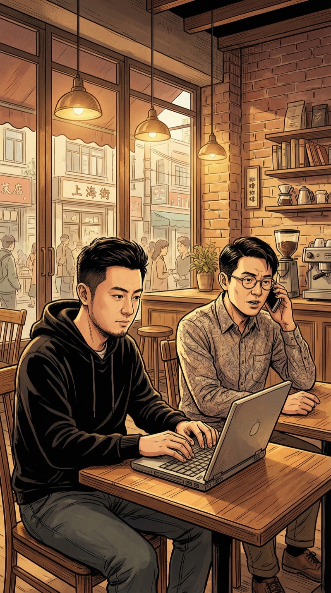
咖啡馆。我在角落用笔记本工作，旁边桌坐着一个三十出头的年轻人，戴眼镜，气质文雅。
他在打电话："移动互联网""用户需求""产品体验"……
这个声音……这些关键词……等等。这人我见过——不，我"将会"见过。2010年的他还没出名，但三年后全中国都会知道他的名字。
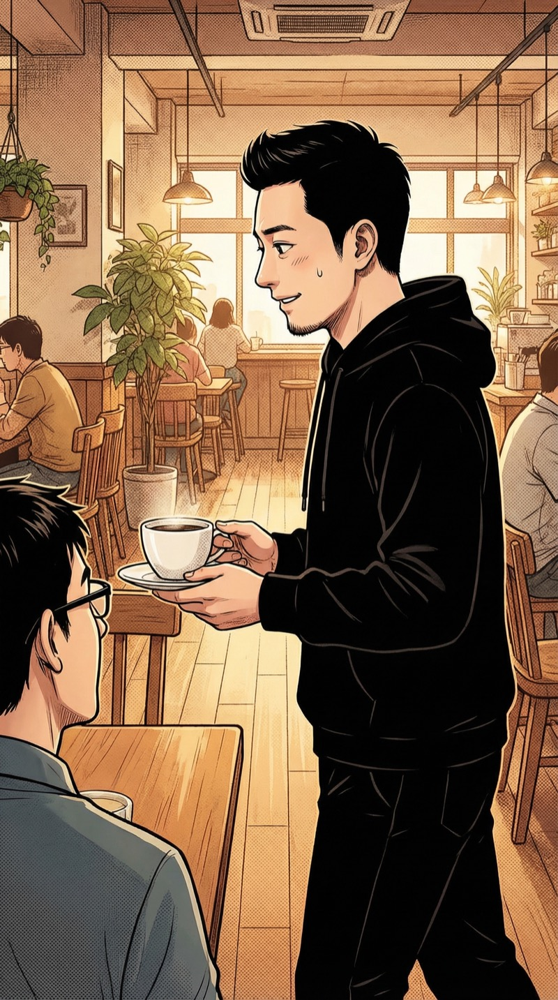
内心挣扎了三秒。然后端着咖啡走过去。
"不好意思打扰一下，我刚才听到您在聊移动互联网——我也是做App的。能交换个名片吗？……哦对不起，我没名片。加个MSN？"
MSN……我真的说出了"加个MSN"。2026年的我说这话会被当成行为艺术。
他友好地笑了，掏出一张简单的名片。
"没事，我也经常搭讪同行。我姓张，做互联网的。你做什么App？"
姓张。做互联网的。2010年。三年后估值百亿。我现在坐在未来中国互联网版图的一个关键节点面前。保持冷静，朱江。保持冷静。
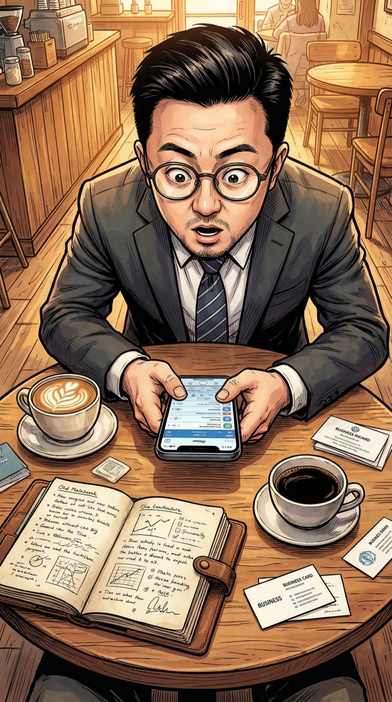
我把翻译App演示给他看。他认真试用，表情从礼貌→惊讶→认真。
"这个离线翻译做得很好。你用了什么技术方案？"
"本地词库+基于统计的翻译模型。主要解决'没网也能翻译'的场景。"
我不能说"Transformer架构"和"大语言模型"——那是十年后的事。好在"统计翻译模型"听起来就够专业了。
他放下手机，认真看我。
"朱江，说实话，你这个产品让我想到了一些东西。我手上有一笔小钱在看项目——你有没有想过融资？不用多，50万，让你全职做这件事。"
50万。2010年的50万，对独立开发者来说是巨款。而且是从这个人手里拿的——他的投资眼光，三年后会被整个行业封神。
但我知道一个问题——他投资的条件向来苛刻：30%股份。
手指无意识地转着咖啡杯——这是我思考时的习惯。
"张哥，说实话我特别感谢您的认可。但翻译App只是我的第一步——我有更大的计划，需要保持灵活性。不过如果您愿意偶尔指点一下，我请您喝咖啡。"
2010年拿他的50万，三年后值五个亿。但我不需要他的钱——我需要的是他的认知和人脉。创业者最大的资源不是资金，是信息网络。这道理是2026年的我花了十年学到的。
他先是一愣，然后笑了。笑容里带着欣赏。
"有意思。第一次有人拒绝我的钱但请我喝咖啡。好，这咖啡我喝了。"
这个笑我认识——是"遇到有趣的人"的笑。在2026年的投资圈，这叫"deal flow quality signal"。我没拿到钱，但拿到了比钱更值钱的东西——他的好感。
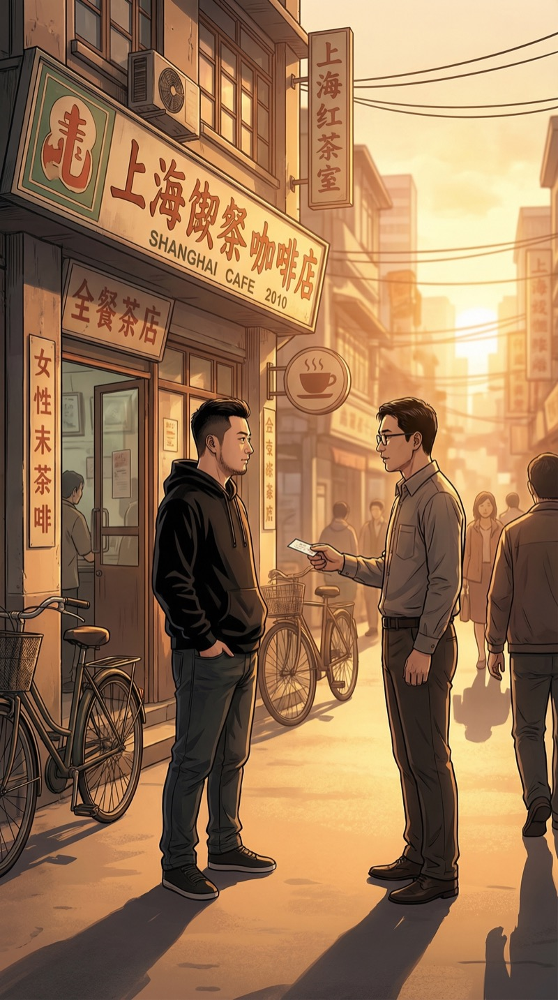
咖啡馆门口，夕阳照在两人身上。他递出名片，我接过。
"把你的MSN发我。有好项目我推荐你看。——对了，下周有个小型的互联网沙龙，愿意来吗？都是圈里的人。"
"必须来。"
互联网沙龙——2010年的创投圈就是靠这种小聚会运转的。参加者可能有后来的独角兽创始人、天使投资人、技术大牛。一张入场券，比50万值钱。
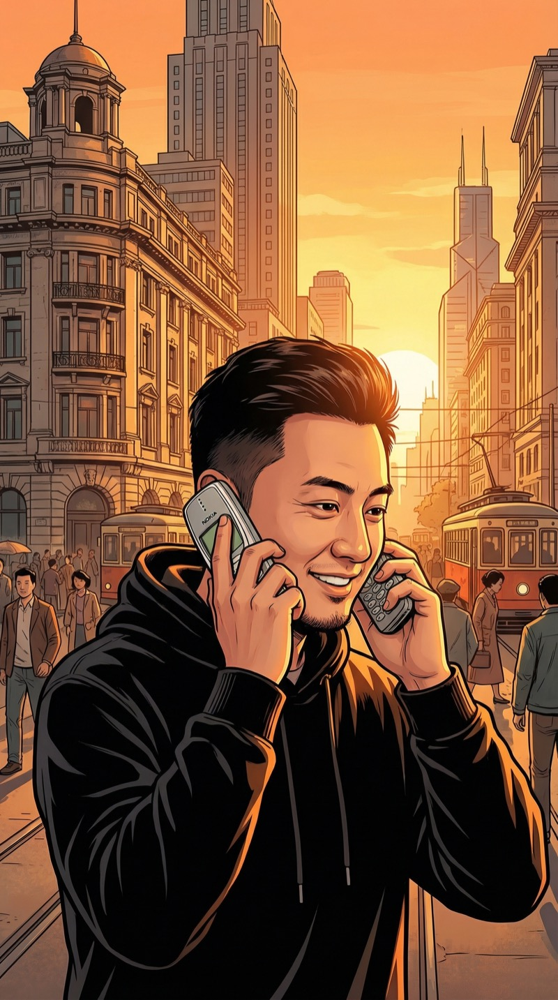
傍晚上海街道。心情极好地走着，诺基亚又响了。来电：妈妈。
"儿子，你舅妈说上海房租特别贵。要不妈给你打点钱？家里虽然不宽裕但——"
2010年的妈妈。每个月退休金两千出头，还惦记着给我打钱。我银行卡里现在有两万八——比她一年的退休金还多。
夕阳打在脸上。笑着，但眼眶有点红。
"妈，不用了。我上个月接了个项目，赚了点钱。明天给你转五千块——你想买什么就买什么，别省。"
"你哪来这么多钱？不会是——"
"正经钱，技术项目。您儿子好歹是交大计算机出来的。"
这一世，我不会让她再等十六年。从今天开始，每个月给妈打钱。这是重生后的第一条铁律。
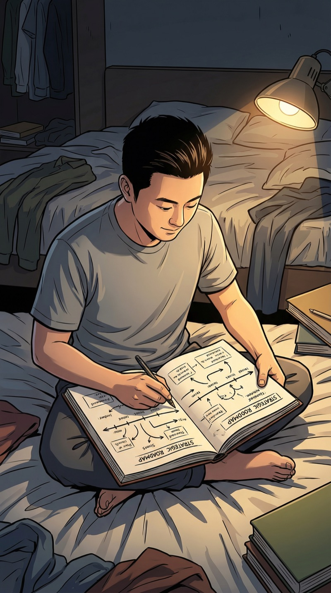
深夜。出租屋。台灯亮着。笔记本上画了一张"2010年战略路线图"。
两周总结——App月收入稳定增长中；拿到了未来大佬的联系方式+沙龙入场券；匿名信危机变成了中科院人脉；给妈妈打了第一笔钱。
这个重生，节奏正确。
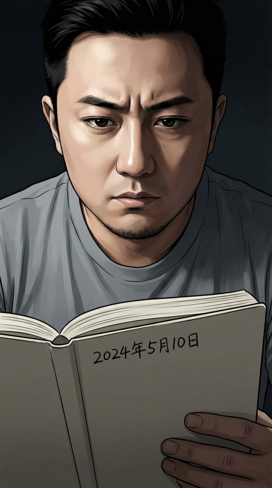
翻笔记本时，手停住了。一个日期，一个名字。
等等……如果我没记错的话——2010年4月14日，玉树地震。7.1级。
距离现在……还有19天。
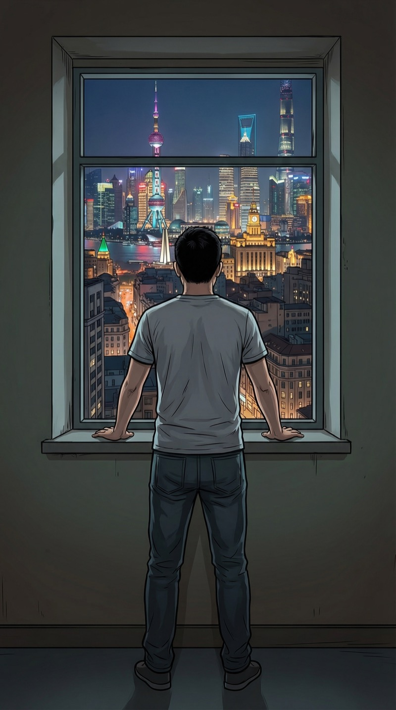
站在窗前，双手撑在窗台上。城市灯火辉煌，但我很渺小。
知道未来的人，看上去无所不能。但有些事——再重生一百次也改变不了。
我能做的，只有……像上次一样。写信。预警。做我能做的事。
然后——活好该活的每一天。
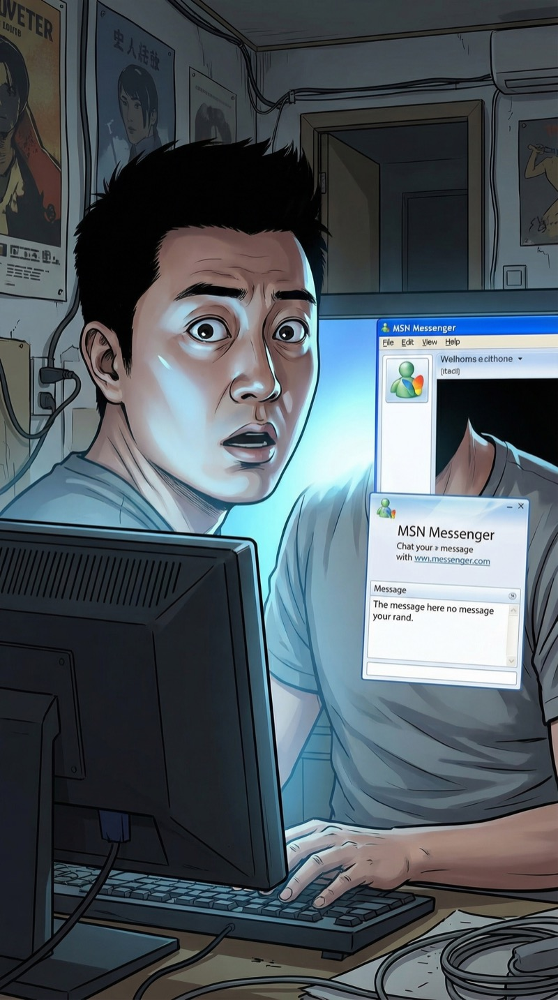
正要关电脑，MSN弹出一条消息。发送者：张。
"朱江，我刚跟一个朋友聊了你的翻译App。他说他们公司也想做类似的东西——不过规模更大。他叫李彦宏。你有没有兴趣来北京聊聊？"
李……彦……宏？！百度？！
匿名信危机化解 · 第一桶金到手 · 未来大佬入局
百度李彦宏想做翻译——是收购？碾压？还是……借力？
北京之行，朱江将面对2010年最大的互联网巨头。
而距离玉树地震，只剩19天。
即将更新……